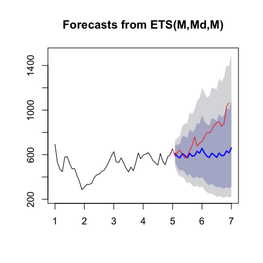

Forecasting
Jeffrey Leek, Assistant Professor of Biostatistics
Johns Hopkins Bloomberg School of Public Health
Time series data
What is different?
- Data are dependent over time
- Specific pattern types
- Trends - long term increase or decrease
- Seasonal patterns - patterns related to time of week, month, year, etc.
- Cycles - patterns that rise and fall periodically
- Subsampling into training/test is more complicated
- Similar issues arise in spatial data
- Dependency between nearby observations
- Location specific effects
- Typically goal is to predict one or more observations into the future.
- All standard predictions can be used (with caution!)
Beware spurious correlations!

http://www.google.com/trends/correlate
http://www.newscientist.com/blogs/onepercent/2011/05/google-correlate-passes-our-we.html
Also common in geographic analyses

Beware extrapolation!

http://www.nature.com/nature/journal/v431/n7008/full/431525a.html
Google data
library(quantmod)
from.dat <- as.Date("01/01/08", format="%m/%d/%y")
to.dat <- as.Date("12/31/13", format="%m/%d/%y")
getSymbols("GOOG", src="google", from = from.dat, to = to.dat)
[1] "GOOG"
head(GOOG)
GOOG.Open GOOG.High GOOG.Low GOOG.Close GOOG.Volume
2008-01-02 692.9 697.4 677.7 685.2 4306848
2008-01-03 685.3 686.9 676.5 685.3 3252846
2008-01-04 679.7 681.0 655.0 657.0 5359834
2008-01-07 653.9 662.3 637.4 649.2 6404945
2008-01-08 653.0 660.0 631.0 631.7 5341949
2008-01-09 630.0 653.3 622.5 653.2 6744242
Summarize monthly and store as time series
mGoog <- to.monthly(GOOG)
googOpen <- Op(mGoog)
ts1 <- ts(googOpen,frequency=12)
plot(ts1,xlab="Years+1", ylab="GOOG")

Example time series decomposition
- Trend - Consistently increasing pattern over time
- Seasonal - When there is a pattern over a fixed period of time that recurs.
- Cyclic - When data rises and falls over non fixed periods
Decompose a time series into parts
plot(decompose(ts1),xlab="Years+1")

Training and test sets
ts1Train <- window(ts1,start=1,end=5)
ts1Test <- window(ts1,start=5,end=(7-0.01))
ts1Train
Jan Feb Mar Apr May Jun Jul Aug Sep Oct Nov Dec
1 692.9 528.7 471.5 447.7 578.3 582.5 519.6 472.5 476.8 412.1 357.6 286.7
2 308.6 334.3 333.3 343.8 395.0 418.7 424.2 448.7 459.7 493.0 537.1 588.1
3 627.0 534.6 529.2 571.4 526.5 480.4 445.3 489.0 455.0 530.0 615.7 563.0
4 596.5 604.5 617.8 588.8 545.7 528.0 506.7 611.2 540.8 509.9 580.1 600.0
5 652.9
Simple moving average
\[ Y_{t}=\frac{1}{2*k+1}\sum_{j=-k}^k {y_{t+j}}\]
plot(ts1Train)
lines(ma(ts1Train,order=3),col="red")

Exponential smoothing
Example - simple exponential smoothing \[\hat{y}_{t+1} = \alpha y_t + (1-\alpha)\hat{y}_{t-1}\]

Exponential smoothing
ets1 <- ets(ts1Train,model="MMM")
fcast <- forecast(ets1)
plot(fcast); lines(ts1Test,col="red")

Get the accuracy
accuracy(fcast,ts1Test)
ME RMSE MAE MPE MAPE MASE ACF1 Theil's U
Training set 0.9464 48.78 39.35 -0.3297 7.932 0.3733 0.07298 NA
Test set 156.1890 205.76 160.78 18.1819 18.971 1.5254 0.77025 3.745
Notes and further resources
- Forecasting and timeseries prediction is an entire field
- Rob Hyndman's Forecasting: principles and practice is a good place to start
- Cautions
- Be wary of spurious correlations
- Be careful how far you predict (extrapolation)
- Be wary of dependencies over time
- See quantmod or quandl packages for finance-related problems.